| |
.
Florida 2025
Universal Orlando Resort Fun Spot Busch Gardens Tampa Sea World Orlando Walt Disney World Resort
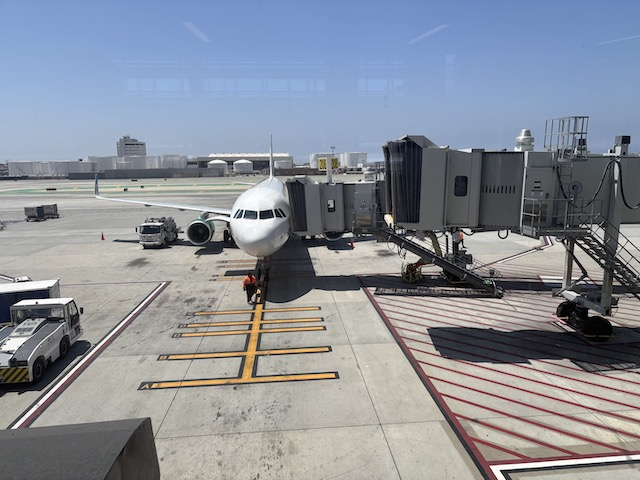
All right. Time for another Incrediblecoasters Trip. And.....this trip is LONG OVERDUE!!! This trip was essentially scheduled for 2022. But.....year after year after year. The trip was cancelled because of F*CKING MONEY!!! GAH!!! F*CKING HATED THAT!!! Well, in 2025, I had enough financial stability (briefly) to make me pull the trigger and officially make Florida happen. And.....yeah. I needed this trip. I needed it BADLY!!! And considering how my last trip to Florida was nearly 18 YEARS AGO, yeah. They added SO MUCH STUFF (as well as gotten rid of some favorites of mine), that......I was LONG OVERDUE to come back. Sure, the flight there and back was MISREABLE (Flight delayed, split up, very back of the plane, stuck in middle seat, too close to a crying baby. Basically, everything that could stereotypically go wrong on a plane not ending in tragedy, going wrong). But who cares? I'm here for the vacation! Not a sh*tty flight!
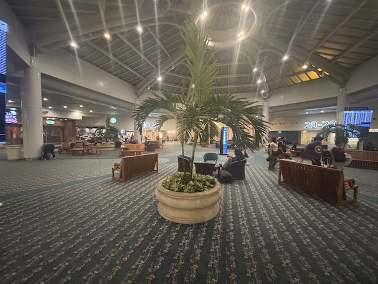
OK. I'm not sure if the Orlando Airport declined in quality in the nearly 18 years since I was last flew in here, or if I just notice the flaws cause I've flown through several more MUCH BETTER airports since then (Tokyo Narita still reigns supreme as best airport I've flown into). But this DEFINATELY felt a lot worse than I remembered. Still far from the worst airport, but definately bummed about that.
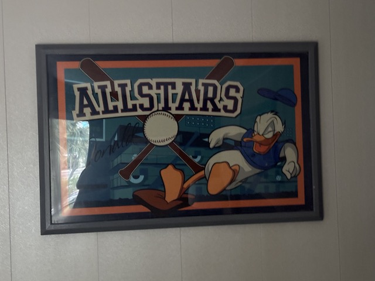
We may be staying in a generic cheap crappy motel, but even these motels milk the fact that they're so close to WDW with some nice Mickey artwork. Really appreciated that nice touch. Nice way to make kids of family members who stay in motels for saving money (just like we are) still get that Disney magic. =)
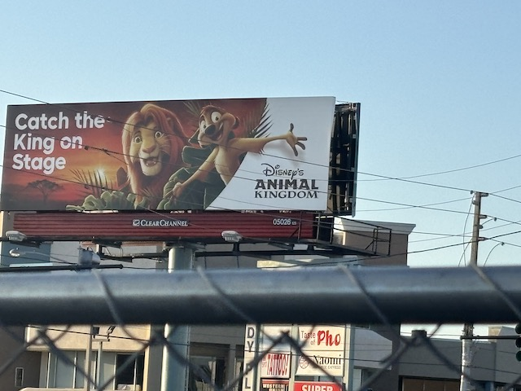
Just a quick reminder that yes. You are in fact in Orlando.
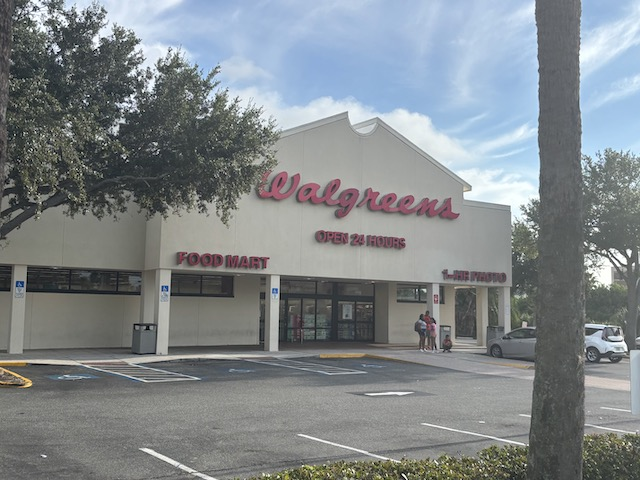
Quickly stopping at Walgreens to buy a few items since....yeah. Stupid f*cking TSA doesn't even allow me to pack toothpaste.
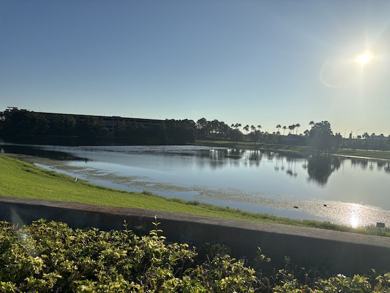
So we're walking to Universal Orlando since.....we're only a mile away and parking is $30. F*CK THAT!!! And hey. It's a nice walk. Love passing by the lake right before you arrive.
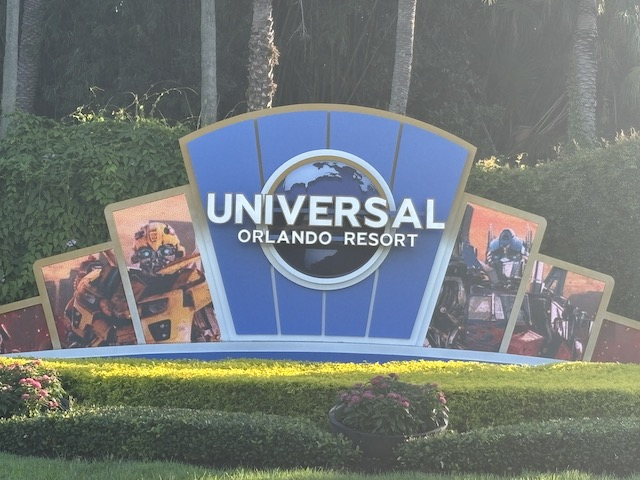
YAY!!! WE MADE IT!!!
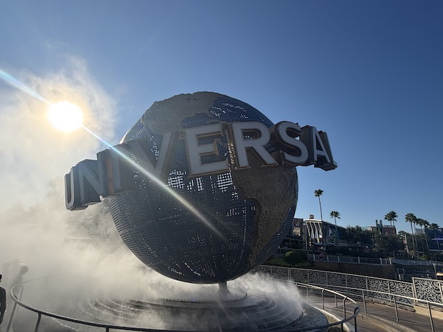
OK. First park of that day, Universal Studios Florida.
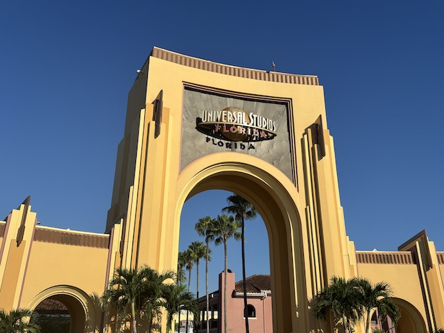
I know it may sound crazy to do this first when Velocicoaster is right next door. But.....I do have my reasons for knocking this out first.
 Yeah. This is why. Knocking this out of the way before it dissapears forever.
Yeah. This is why. Knocking this out of the way before it dissapears forever.
 So fun fact. This ride was originally scheduled to be demolished right after Labor Day Weekend. So I killed my inital plan of going at Halloweentime for the sake of me getting on Hollywood: Rip Ride Rockit before it closed. So I settled on going in mid-August since.....it's less crowded in August compared to July, and it'll give me some more time at my 2nd job to raise some money before quitting. Well.....they turned out to move up the closing date of Rockit, where it would close forever on August 18. And.....I fly in on August 15! But I initially scheduled Universal Orlando to be towards the end of the trip! Rockit will be open when I fly in, but close midway through the trip, RIGHT BEFORE I PLANNED ON GETTING TO UNIVERSAL ORLANDO!!!!
So fun fact. This ride was originally scheduled to be demolished right after Labor Day Weekend. So I killed my inital plan of going at Halloweentime for the sake of me getting on Hollywood: Rip Ride Rockit before it closed. So I settled on going in mid-August since.....it's less crowded in August compared to July, and it'll give me some more time at my 2nd job to raise some money before quitting. Well.....they turned out to move up the closing date of Rockit, where it would close forever on August 18. And.....I fly in on August 15! But I initially scheduled Universal Orlando to be towards the end of the trip! Rockit will be open when I fly in, but close midway through the trip, RIGHT BEFORE I PLANNED ON GETTING TO UNIVERSAL ORLANDO!!!!
Luckily, I was able to simply change the dates around for the trip, transferring my Universal Orlando ticket dates to be the beginning of the trip so I could get on Hollywood: Rip Ride Rockit (for an additional $12. Worth it). And....PERFECT TIMING!!! So glad I went to Florida when I did.
 As for my thoughts on this ride, it's fun. Far from the best ride ever, but I did enjoy it. Sure, it's not the best coaster ever. But I heard A LOT of enthusiasts celebrating its demise, calling it a rough piece of sh*t, and saying Good Riddance to it. No. It's not that bad. Sure, there are FAR better coasters out there. But I still did enjoy the ride, did NOT find it rough (WTF are those enthusiasts talking about?) and I'm DEFINATELY glad I barely got on this coaster by the skin of my teeth.
As for my thoughts on this ride, it's fun. Far from the best ride ever, but I did enjoy it. Sure, it's not the best coaster ever. But I heard A LOT of enthusiasts celebrating its demise, calling it a rough piece of sh*t, and saying Good Riddance to it. No. It's not that bad. Sure, there are FAR better coasters out there. But I still did enjoy the ride, did NOT find it rough (WTF are those enthusiasts talking about?) and I'm DEFINATELY glad I barely got on this coaster by the skin of my teeth.
 So the big gimmick of this ride is listening to music on the ride. I know some claimed the best song for the ride was "Rainbow Connection" by the Muppets. But I only got one ride, and I chose the song "Welcome to the Black Parade" by My Chemical Romance. It seemed fitting considering this coaster is taking its final rides, and this is both simaltaneously, my first and last ride on it, and the song is about death. Plus, I really like that song. Unfortuantely, this song did NOT pair well with the ride. Because of the slow intro, its playing the slow piano section through the ride. By the time the song really picks up and becomes a rock song, the ride is ending and the song cuts off right as it starts to pick up its tempo.
So the big gimmick of this ride is listening to music on the ride. I know some claimed the best song for the ride was "Rainbow Connection" by the Muppets. But I only got one ride, and I chose the song "Welcome to the Black Parade" by My Chemical Romance. It seemed fitting considering this coaster is taking its final rides, and this is both simaltaneously, my first and last ride on it, and the song is about death. Plus, I really like that song. Unfortuantely, this song did NOT pair well with the ride. Because of the slow intro, its playing the slow piano section through the ride. By the time the song really picks up and becomes a rock song, the ride is ending and the song cuts off right as it starts to pick up its tempo.
 I know I'm being pretty vague here. But no need to worry. You can read my full thoughts in my new Hollywood: Rip Ride Rockit Review in my updated Universal Orlando Resort review. And it's not just that. I also have reviews of Velocicoaster, Hagrid's Motorbikes, and ALL the coasters at Epic Universe now avaliable.
I know I'm being pretty vague here. But no need to worry. You can read my full thoughts in my new Hollywood: Rip Ride Rockit Review in my updated Universal Orlando Resort review. And it's not just that. I also have reviews of Velocicoaster, Hagrid's Motorbikes, and ALL the coasters at Epic Universe now avaliable.
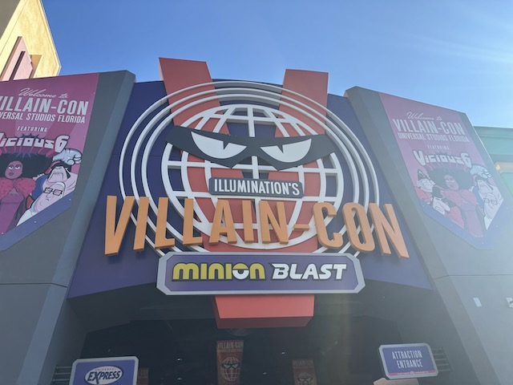
OK. Time for some other rides. Might as well check out this Minions standing shooting dark ride. Nothing special. But hey. It's fun and not avaliable in Hollywood.
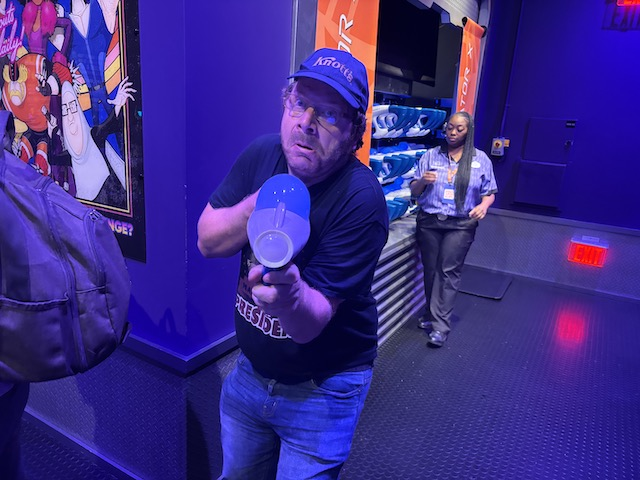
CALL ME A MINION ONE MORE TIME, BITCH!!! I F*CKING DARE YOU!!!
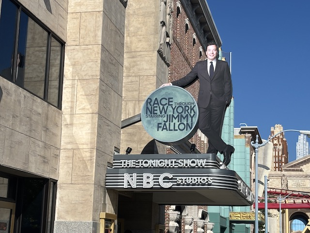
Quick! We better ride this ride before the current dictator decides to threaten Universal to have this ride cancelled and reskinned as some sh*tty Charlie Kirk memorial ride (watch your neck)!
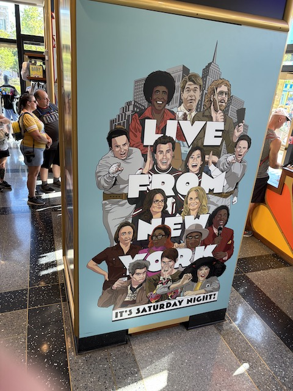
I may be baffled as to why this ride exists, but I still had fun on it, even if I'm not a huge fan of Jimmy Fallon (though I will stand up for him if the dictator attempts to have him fired, like his attempt with Jimmy Kimmel).
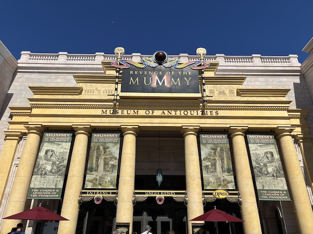
OK. Time for my first reride of this trip that I also rode in 2007.
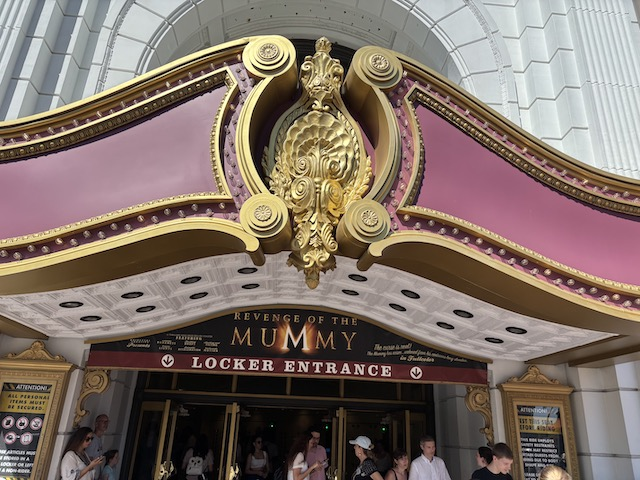
I know there are so many better coasters, but this ride still surprises me in just how good it was. Glad it was even better than I remembered. =)
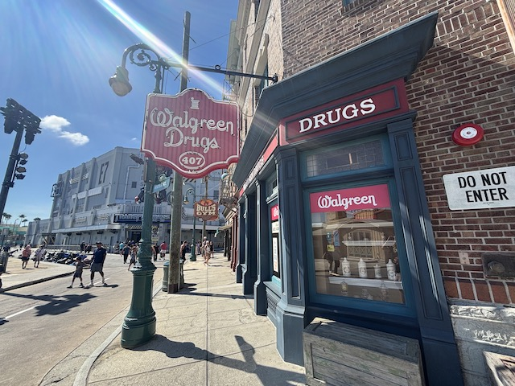
Ooh. Love the retro design of the Walgreens inside Universal Studios. Also, seems like they may sell some special stuff in there.
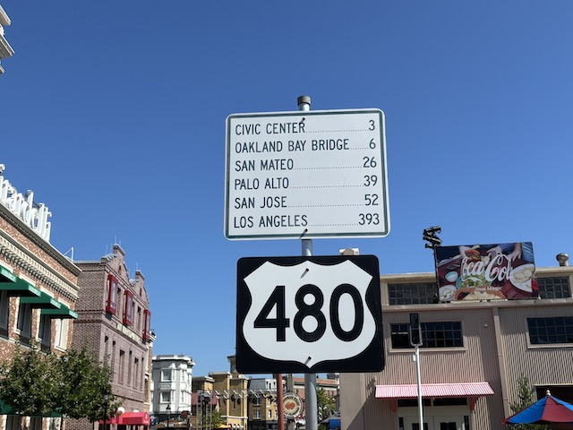
*gasp* We're only 393 miles from home!? That's totally roadtripable! We totally should've just driven here!
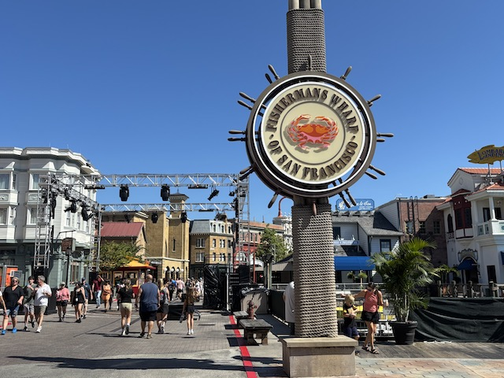
I know its not as cool checking this out since I've been to the real Fisherman's Wharf, but I'm still having fun here.
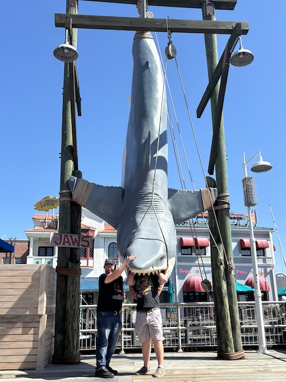
"Damn it! I got eaten by a shark! AGAIN!!!"
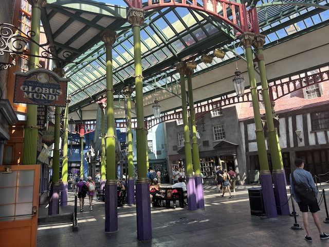
OK. Next up, time to check out Diagon Alley.
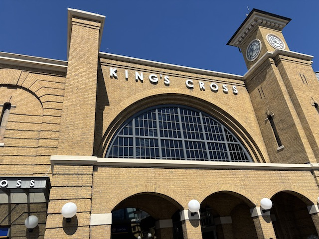
I know I technically could take this to pop over to IOA and sneak on Velocicoaster. Tempting, but.....I'm gonna hold and wait for tomorrow.
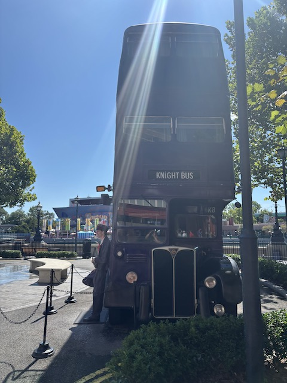
How the hell am I seeing the Knight Bus if I'm a muggle? Unless *gasp*!
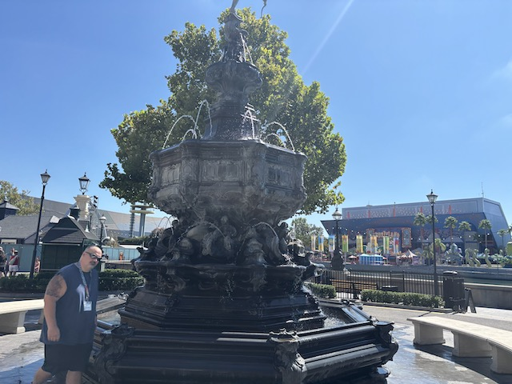
Nice Harry Potter Fountain.
 Hey Harry Potter obsessed siblings! Guess where I am! =P
Hey Harry Potter obsessed siblings! Guess where I am! =P
 Next ride of the day, Escape from Gringotts.
Next ride of the day, Escape from Gringotts.
 So this ride is interesting. This was a ride where initially, I was torn on whether this counted as a credit or not. In fact, for a longass time, I just argued.....No. This is NOT a credit. It's a dark ride. Not a roller coaster. But then I was told I should reevaluate my position. And after riding it......yeah. This counts. It's totally a coaster with breaks in between that act as the dark ride portion. But the parts that are a coaster section, are actual coaster section, and not just a dark ride with a drop, a la Fire in the Hole or Blazing Fury, which also are counted as credits by some, but.....yeah. Those two don't count. But this does. It's coaster section is pretty solid.
So this ride is interesting. This was a ride where initially, I was torn on whether this counted as a credit or not. In fact, for a longass time, I just argued.....No. This is NOT a credit. It's a dark ride. Not a roller coaster. But then I was told I should reevaluate my position. And after riding it......yeah. This counts. It's totally a coaster with breaks in between that act as the dark ride portion. But the parts that are a coaster section, are actual coaster section, and not just a dark ride with a drop, a la Fire in the Hole or Blazing Fury, which also are counted as credits by some, but.....yeah. Those two don't count. But this does. It's coaster section is pretty solid.
 And not only does this count as a credit, and not only is it really fun. But this actually turned out to be #700 for me! =)
And not only does this count as a credit, and not only is it really fun. But this actually turned out to be #700 for me! =)
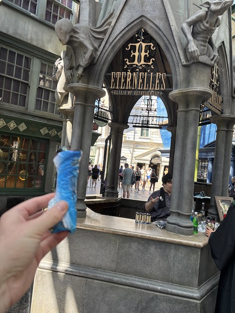
OK. So we decided to get this "Magic Potion", AKA some flavoring that you add to water. Yeah. I know I'm on a budget. But.....this was my one splurge of the trip. And yeah. This was fun and tasty. I enjoyed it. Just have to remember that this trip is still on a budget.
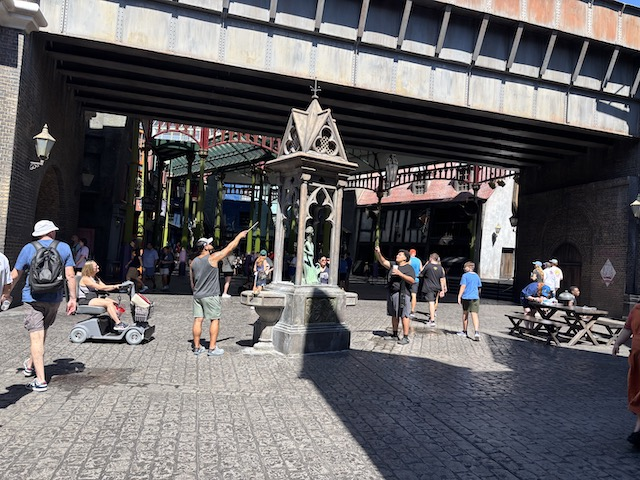
Oh boy! If I stand here, I can pretend that the stick of plastic I paid $20 for can actually do magic! =)
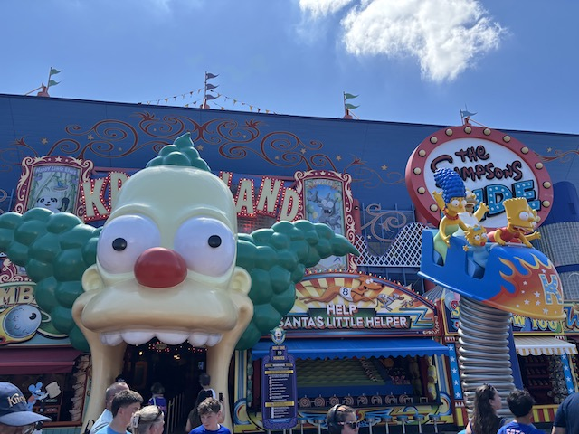
How long until Disney's lawyers force the demolition of this ride (still can't believe Disney owns the Simpsons)?
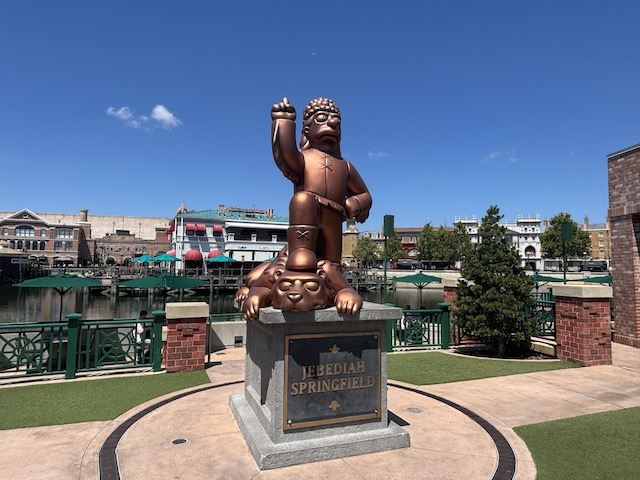
Must decapitate statue.
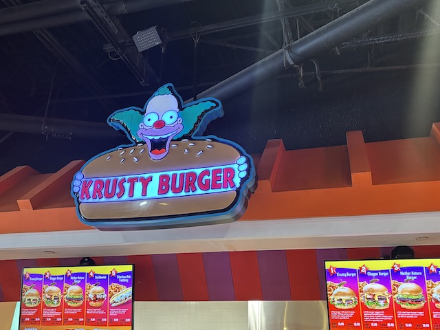
Speaking of the Simpsons, time for some lunch at Krusty Burger.
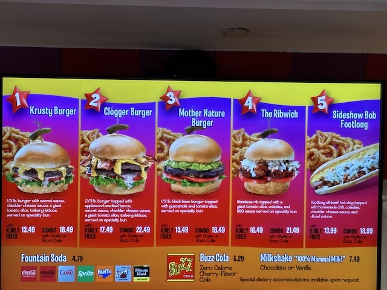
I know part of me wants to try the Ribwich. Except I know I'll just get some generic crappy Rib Sandwich, and not this (I REALLY want to make that at home. Except I don't have the grocery budget, cooking skills, or time to do so).
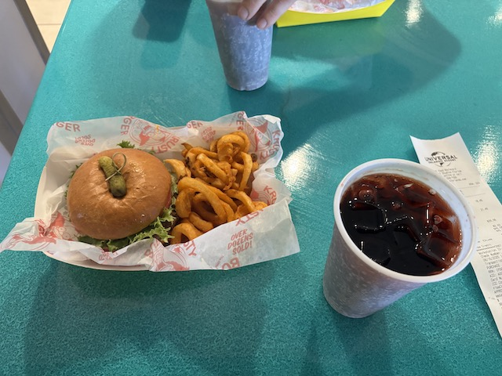
The Krusty Burger was good, but nothing special. However, what did surprise me was the Buzz Cola. It had this strong syrup taste that tasted really good and surprisingly unique. Kind of want them to bottle this stuff (maybe they do and I just ignore it for finanial reasons).
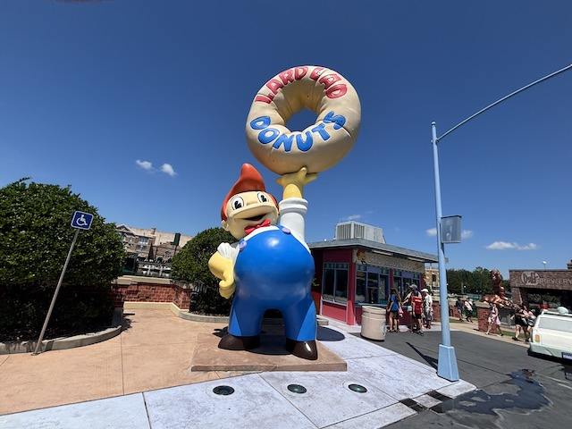
Hmm. I wonder if anything bad will happen if I steal that giant doughnut?
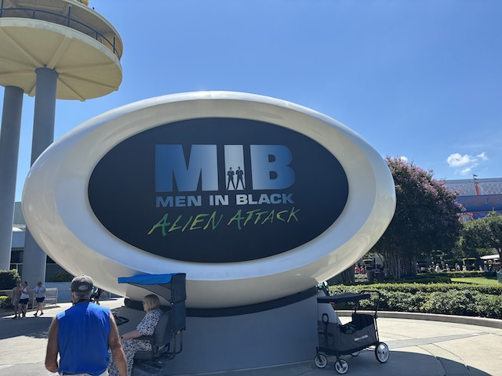
Oh man. Really happy to be getting back on this ride. =)
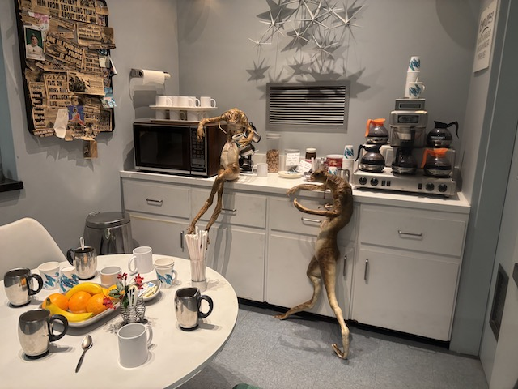
For those worried that aliens invading will conquer Earth? No need to worry. They're just chilling in the break room drinking coffee. No threat at all.
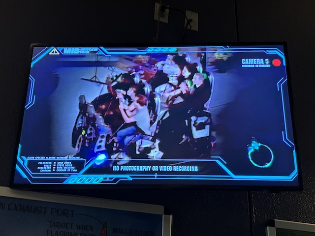
I know I've ridden so many more dark rides since I was last here in 2007, but this still takes the cake as my favorite shooting dark ride.
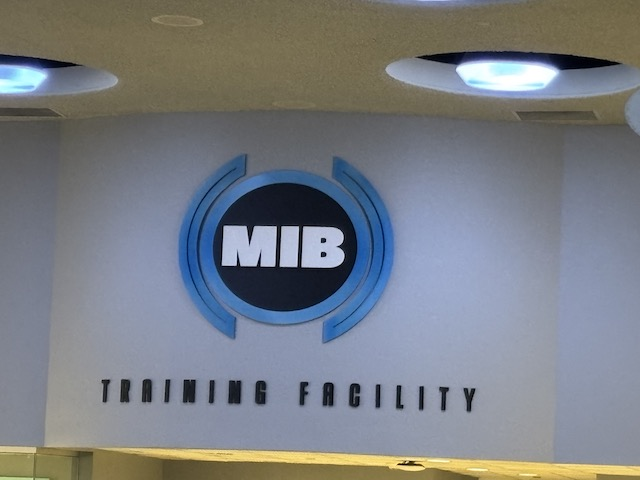
Still landing on the Top 10 Dark Rides List.
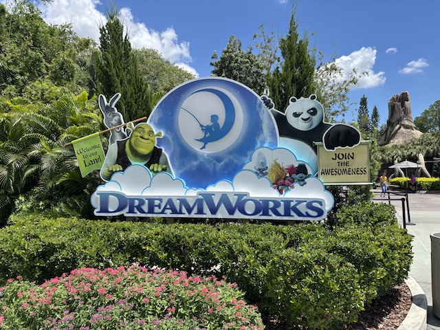
Why are we in the Dreamworks Land? Uh oh. =0
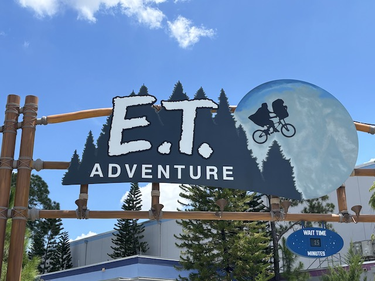
Phew. We're just here to ride E.T. Really trippy riding this ride since.....it's only avaliable here after they tore out this ride in both Hollywood and Japan.
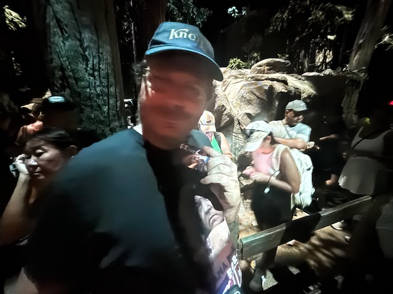
This brings back some VERY old memories for me.
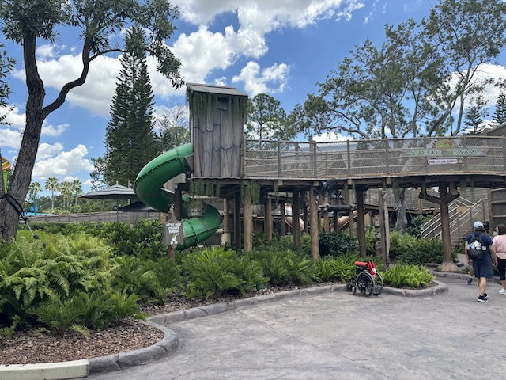
You know, I know I'm not the target age, but it looks like the Shrek playground is underwhelming.
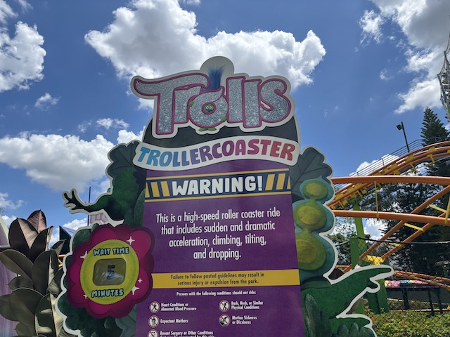
*Sigh* Yeah. We're also here to credit whore.
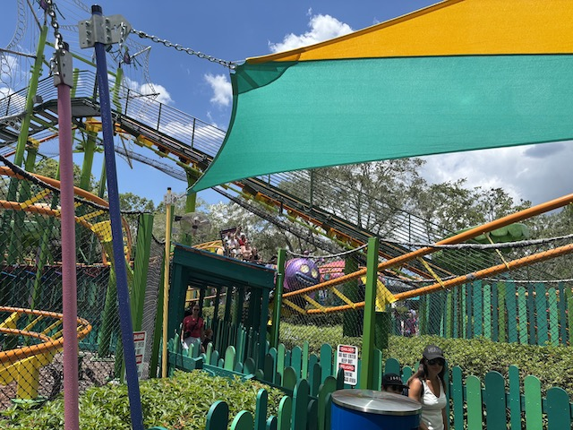
But hey. At least Roller Skaters are pretty good by kiddy coaster standards. This could be a lot worse.
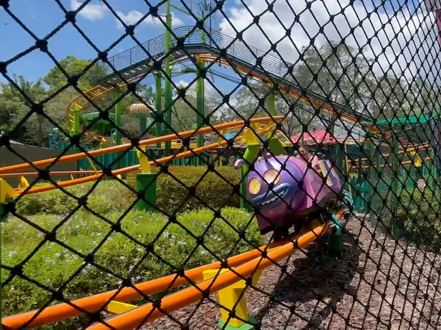
Cha-Ching!
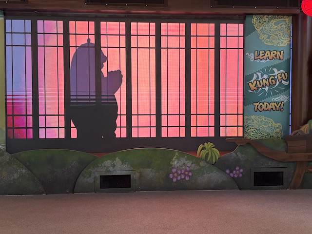
So Jason decided to see Po Live, despite....us sticking out. But hey. At least it was made amusing when Jason answered to enjoying shrimp in his ramen, and Po getting offended since some of his friends are shrimp (which is apparently genuinely true if you count the TV show as canon, and have not seen). Especially with Po trying to understand even though Jason admitted to enjoying seeing his friends killed for the sake of his dinner.
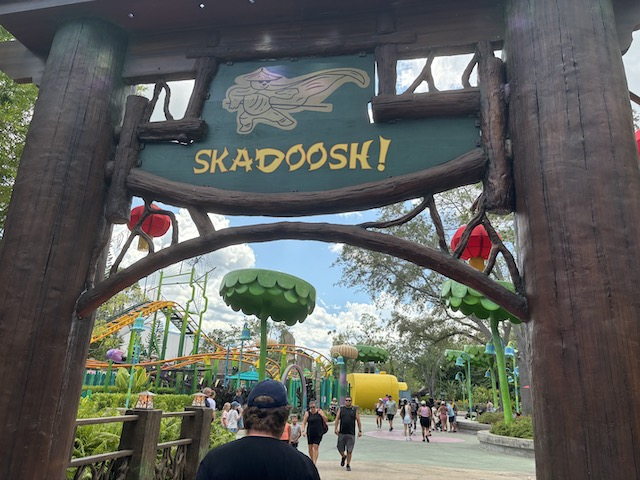
Well, we had fun in the Dreamworks land. But it's time for us to Skadoosh on out of here.
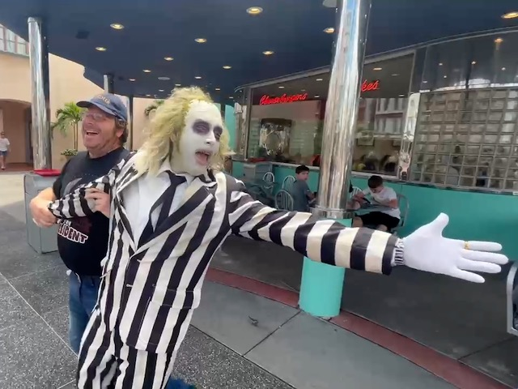
Beetlejuice may be the one from the Underworld, but Jason's the one who's gonna be doing the torturing. >=)
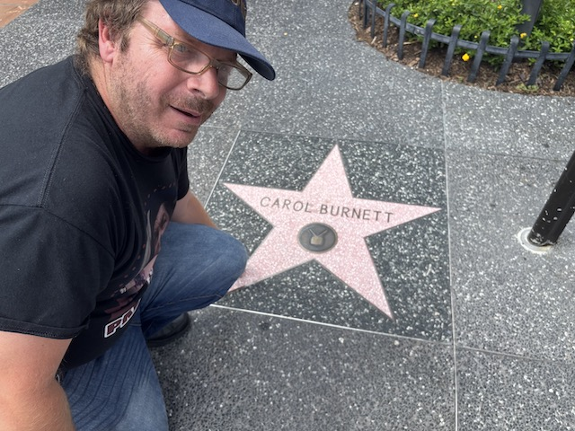
OMG! We have to stop at Carol Burnett's star on the Universal Studios Walk of Fame!
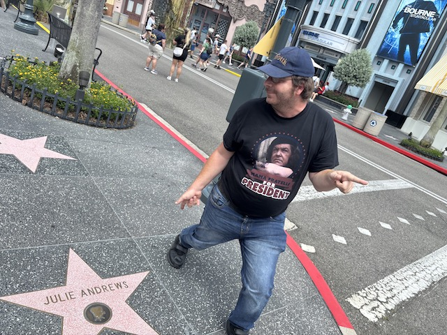
Why can't these people have stars on the actual Hollywood Walk of Fame!? Might bother to go to Hollywood if you added them (Spoiler alert. No we won't)!
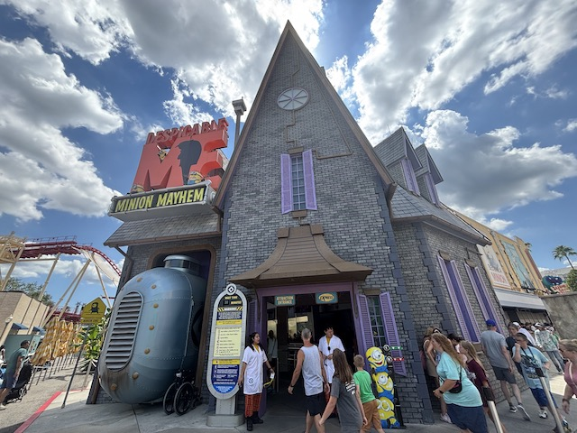
I know we have this back at home. But hey. It's been FOREVER since we were last at Universal Studios Hollywood (though that's changing this year for obvious reasons).
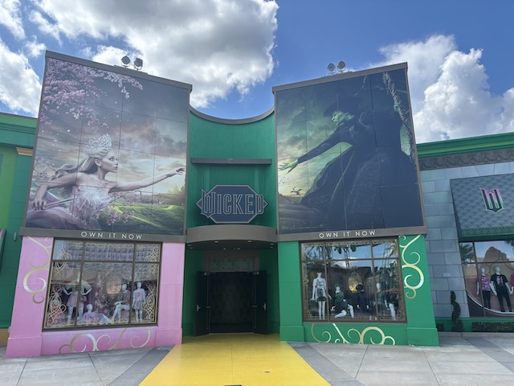
*gasp* A Wicked Experience!? Yeah. We're doing this. Jason is WAY too big of a Wicked fan to allow me to skip this.
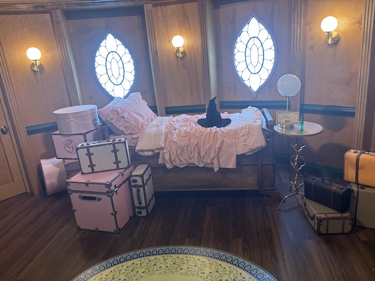
No! We didn't steal this hat from Elphaba! It's from the Wicked Witch of the West! A TOTALLY different character, who unlike Elphaba, is actually evil!
Though seriously. It was pretty cool to check this out. =)
Hanging out with Olive Oil. Unfortunately, Popeye can't be here as he's too busy at IOA at the Popeye & Bluto Ride (looking foreward to that tomorrow).
Sure, it's not as good as Spiderman (TOMORROW!!!), but Transformers is still really fun. And hey. If Florida can have both Transformers and Spiderman.... ;)
Pretty sure there's gonna be some small little show here. Or maybe it's just theming to make it look like a movie set.
All right. Checking out the Horror Make Up Show.
I know I semi-work in this field and am fairly familiar with the industry, so this wasn't as shocking or magical to me compared to the others (and I live in So-Cal). But this was still pretty cool to see.
Also checked out this show. It was good, though I imagine I would've liked it more had I seen The Bourne Identity.
Oh no! The one thing I missed at Universal Studios Florida today is the thing that's now closing in 2026! Oh who am I kidding? I can't pretend to care.
 Was hoping to snag another ride on Rockit. Unfortunately, the ride is closed for a thunderstorm nearby. And with the park closing in 30 minutes, I'm all out of time.
Was hoping to snag another ride on Rockit. Unfortunately, the ride is closed for a thunderstorm nearby. And with the park closing in 30 minutes, I'm all out of time.
 I may be super glad I managed to ride Rockit, and didn't hate it like other enthusaists did. But at the same time, if the rumors of its replacement are true, then this trade will be GREATLY appreciated, and yeah. The new ride would be much better.
I may be super glad I managed to ride Rockit, and didn't hate it like other enthusaists did. But at the same time, if the rumors of its replacement are true, then this trade will be GREATLY appreciated, and yeah. The new ride would be much better.
Oh trust me. I am DEFINATELY looking foreward to Islands of Adventures tomorrow. =)
Loved this guys music. I would tip you, except.....budget and all.
So we initially thought, we really enjoyed the Toothsome Chocolate Emporium back home in California, why not check it out here. Turns out if we wanted to do that, we would've had to plan for this in advance and make reservations about a week ago. Ugh. Oh well. Not a big deal. I can just go back to the California one.
Instead, why not just check out the Hard Rock Cafe. These places are always fun, and it was cool to notch another one (6th one for me).
So one promotion Hard Rock Cafe is doing is the Worldwide Burger Tour. Cities from around the world submitting a burger and then they decide who wins. They're rolling out the finalists. And.....most of those look really good (except for NYC. Sorry, but....WTF are you thinking putting cheesecake on a f*cking burger).
So I wound up getting the Condol Burger from Barcelona (I was really torn between this and the Tampa Burger, but.....this won out for me). And.....DAMN!!! This was a REALLY good burger. Loved the entire concept and......if I was both rich and decided to not give a f*ck about my health, I would TOTALLY repeatedly come back here to try them all (except maybe not the NYC one. That one just seems too weird and not good).
We had a great time, and totally look foreward to doing IOA tomorrow (VELOCICOASTER!!!).
 And.....we're back. So happy to be back here.
And.....we're back. So happy to be back here.
HELL YEAH!!! ISLANDS OF ADVENTURES DAY TODAY!!! =)
I've been waiting for this for so damn long! No more waiting around!
Could someone please tell me what the hell Quandry is?
 OK. Enough f*cking around. Time to get on one of the Big 3 Hyper-Anticipated coasters of this trip. VELOCICOASTER!!!
OK. Enough f*cking around. Time to get on one of the Big 3 Hyper-Anticipated coasters of this trip. VELOCICOASTER!!!
 I know this ride has been super hyped-up by other enthusiasts. And.....YEAH!!! SO F*CKING GOOD!!!
I know this ride has been super hyped-up by other enthusiasts. And.....YEAH!!! SO F*CKING GOOD!!!
 The first half of the ride is pretty good. Fun, but nothing too crazy.
The first half of the ride is pretty good. Fun, but nothing too crazy.
 But it's that 2nd part of the ride where Velocicoaster goes from pretty damn good, to Top 10 Coaster AMAZING!!!
But it's that 2nd part of the ride where Velocicoaster goes from pretty damn good, to Top 10 Coaster AMAZING!!!
 Seriously, that Top Hat has a really nice pop of ejector air.
Seriously, that Top Hat has a really nice pop of ejector air.
 That Zero G Roll somehow manages to both have an insanely fast out of control feeling while also simaltaneously providing some nice hangtime. Not an easy combination, and one that most coasters can't pull off. But Velocicoaster is just a REALLY special and amazing ride.
That Zero G Roll somehow manages to both have an insanely fast out of control feeling while also simaltaneously providing some nice hangtime. Not an easy combination, and one that most coasters can't pull off. But Velocicoaster is just a REALLY special and amazing ride.
 COASTERGASM!!!
COASTERGASM!!!
 Hey people upsidedown! You think its amazing so far, just wait till you get to the surprise at the end! >=)
Hey people upsidedown! You think its amazing so far, just wait till you get to the surprise at the end! >=)
 These turns may not seem like anything special. Just a sort of breather moment to catch your breath. Except.....NO!!! These things are FULL of laterals and just insanely forceful crazy fun. And that leads us straight into the best part of the ride.
These turns may not seem like anything special. Just a sort of breather moment to catch your breath. Except.....NO!!! These things are FULL of laterals and just insanely forceful crazy fun. And that leads us straight into the best part of the ride.
 The Mosasaurus Roll! HOLY SH*T!!! ONE OF THE MOST INSANE ELEMENTS ON ANY COASTER!!! I CAN NOT THINK OF ANY INVERSION ON ANY OTHER COASTER THAT IS MORE FORCEFUL THAN THIS RIGHT HERE!!! This is one moment where.....OH MY GOD!!! I THINK THE RIDE IS LITERALLY TRYING TO KILL ME!!! AND I LOVE IT OH SO MUCH!!!
The Mosasaurus Roll! HOLY SH*T!!! ONE OF THE MOST INSANE ELEMENTS ON ANY COASTER!!! I CAN NOT THINK OF ANY INVERSION ON ANY OTHER COASTER THAT IS MORE FORCEFUL THAN THIS RIGHT HERE!!! This is one moment where.....OH MY GOD!!! I THINK THE RIDE IS LITERALLY TRYING TO KILL ME!!! AND I LOVE IT OH SO MUCH!!!
Hello Hulk. Long time, no see. I know I've been gushing over Velocicoaster and mourning the death of your former neighbor, Dueling Dragons. But don't worry. I haven't forgotten about you and look foreward to hopping back on later today.
Oh boy. We're going into the Wizarding World of Harry Potter. I know exactly what we're heading to.
I may not be the biggest Harry Potter fan, but I still have to love just how detailed the Hogsmade theming is.
OK. We got on Velocicoaster. Time to hop on the Hogwarts Express and head back to Diagon Alley in Universal Studios Florida. ;)
 Yep. Time to finally get on the official Dueling Dragons replacement and beloved by damn-near everyone, Hagrids Magical Creatures Motorbike Adventure (I'm not saying that every time I refer to this ride).
Yep. Time to finally get on the official Dueling Dragons replacement and beloved by damn-near everyone, Hagrids Magical Creatures Motorbike Adventure (I'm not saying that every time I refer to this ride).
*Sigh* Yes. It's true. This ride gets a MONSTER LINE!!! I haven't waited in a line this long since......oh god. I was gonna say Flying Dinosaur at Universal Studios Japan, but even that was shorter than this. Yeah. Every horror story about the line you've heard is true. This thing is LONG AS HELL!!! And a pain in the ass. Yes, I should've bought fastpass. But......I didn't have an extra $300 to drop on this trip.
 I know this'll sound shocking and mean, but I'm just gonna say it. Hagrids is the most overrated coaster I've ever been on. I officially owe apologies to the Beast, Millenium Force, Kingda Ka (which is now dead), and any other coaster I've gone over as overrated.
I know this'll sound shocking and mean, but I'm just gonna say it. Hagrids is the most overrated coaster I've ever been on. I officially owe apologies to the Beast, Millenium Force, Kingda Ka (which is now dead), and any other coaster I've gone over as overrated.
 FULL DISCLAIMER: My statement on this being hyper-overrated is NOT me saying that Hagrids is a bad ride. I liked Hagrids. I think its a very fun ride. I think its very well themed, well designed, and a ton of fun. But.....it is at the end of the day, a family coaster. A VERY STRONG and up there family coaster, but still a family coaster. So when I see enthusiasts put this in their Top 10, ranking this amongst rides like Steel Vengeance and the other RMCs, Superman, Velocicoaster, Expedition Ge Force, Phoenix, El Toro, etc. You rank this ride amongst THOSE RIDES!!!? I'm sorry, but......NO!!!! If you're gonna consider this to be a Top 10 Coaster, then you might as well rank Expedition Everest, or TRON, or Cosmic Rewind @ Epcot as Top 10 Coasters (which to be fair, I've also seen a handful of enthusiasts do that. So at least they're consistent), since those are the coasters that I consider to be the equals of Hagrids and in the same ranking. Which.....again. I like Hagrid, and all the other coasters I mentioned. They're just not Top 10 Coasters. Or even close (It also doesn't help the fact that I had to wait 3 f*cking hours for it).
FULL DISCLAIMER: My statement on this being hyper-overrated is NOT me saying that Hagrids is a bad ride. I liked Hagrids. I think its a very fun ride. I think its very well themed, well designed, and a ton of fun. But.....it is at the end of the day, a family coaster. A VERY STRONG and up there family coaster, but still a family coaster. So when I see enthusiasts put this in their Top 10, ranking this amongst rides like Steel Vengeance and the other RMCs, Superman, Velocicoaster, Expedition Ge Force, Phoenix, El Toro, etc. You rank this ride amongst THOSE RIDES!!!? I'm sorry, but......NO!!!! If you're gonna consider this to be a Top 10 Coaster, then you might as well rank Expedition Everest, or TRON, or Cosmic Rewind @ Epcot as Top 10 Coasters (which to be fair, I've also seen a handful of enthusiasts do that. So at least they're consistent), since those are the coasters that I consider to be the equals of Hagrids and in the same ranking. Which.....again. I like Hagrid, and all the other coasters I mentioned. They're just not Top 10 Coasters. Or even close (It also doesn't help the fact that I had to wait 3 f*cking hours for it).
 I know in the past, I was a little bitter towards this ride, partially due to the unfairly high reviews of this being a Top 10 coaster, combined with this sitting on the gravesite of Dueling Dragons. Which.....yeah. Dueling Dragons > Hagrids. But.....it's clear that this is still a really fun and well designed coaster.
I know in the past, I was a little bitter towards this ride, partially due to the unfairly high reviews of this being a Top 10 coaster, combined with this sitting on the gravesite of Dueling Dragons. Which.....yeah. Dueling Dragons > Hagrids. But.....it's clear that this is still a really fun and well designed coaster.
 I mean....this ride not only has great theming, but it also has a vertical spike, a backwards section, a drop track, and is just a super long ride. Yeah. Once you get past the other rankings and what came before it, it's a great solid ride. Two thumbs up from me (just not any Top 10 awards. That's all).
I mean....this ride not only has great theming, but it also has a vertical spike, a backwards section, a drop track, and is just a super long ride. Yeah. Once you get past the other rankings and what came before it, it's a great solid ride. Two thumbs up from me (just not any Top 10 awards. That's all).
OK. Time for the one little piece of the Lost Continent that that c*nt J.K. Rowling (so glad I can on top of hating her for killing Dueling Dragons, also hate her for serious legit adult reasons cause she just is genuinely a vile wretched bitch) didn't kill.
That's right. Time for lunch at Mythos. =)
I loved this place last time I was here so much it landed the Universal Orlando Resort on our Top 10 Theme Park Dining Options List. But....does the food hold up?
Still pretty damn good. I'm not sure if I'd put it as my favorite simply since.....Greek and Mediterranian Cuisine isn't my favorite. But still thumbs up (and Universal Orlando is staying on the Top 10 Park Dining List).
"No! I'm not under arrest! I'm just riding on the cops bike! He's not gonna take me to Who Jail!"
Well....all the outdoor rides are closed due to lightning in the area. Let's check out the Cat in the Hat ride. Besides, I was wanting to check it out anyways, kind of regret skipping it in 2007.
I'm relieved to report that this ride is based on the book and NOT that god-awful 2003 version with Mike Meyers.
Sure. It's not an amazing Top 10 Dark Ride or anything. But.....it was still a lot of fun. Both because I like the Cat in the Hat story, as well as to laugh at just how bad some of these animatronics are.
Come on, this isn't so hard. We take cash or card. Just buy the merch, you *bleep*tard
OK. I know the lightning storm is partially an excuse, but I REALLY was looking foreward to getting back on this ride (still kicking myself in the balls for skipping this in Japan, which is now gone there).
I still love this ride. EASILY my 2nd favorite dark ride behind Journey to the Center of the Earth (I have some very sad news about Test Track and an Incrediblecoasters Rant on that coming up in the WDW update).
Honestly, with just how many real life villians running around and ruining everything, we need the X-Men now more than ever.
OK. The lightning has stopped. Time to hop back on the other major coaster at Islands of Adventures. The Incredible Hulk.
Ooh. Love the new sign they gave the Hulk. It looks so much better. Great job. =)
This may be a repeat and it may be overshadowed by all the new hotness that's come to Florida since my last visit, but I still really like Hulk and was super glad to get on it.
That upward launch into the Zero G Roll is still super f*cking cool, and honestly.....one of the most interesting and unique layouts of any B&M.
Still a super forceful B&M. Really wish they still made them like this.
Such a photogenic ride. I really REALLY love the way this ride looks.
I know Universal gave this a total retracking to extend its life (really wish they managed to this to another pair of B&Ms that used to reside here). Thanks, I really appreciate that and.....Hulk deserves that love.
I know in the past, I argued that while I loved the first half, but the second half was weak and lame. And while its true that Hulk really does start out strong, it still has a damn good 2nd half that's still enjoyable.
Moving onto Toon Lagoon. I know we're here for a certain couple rides, but.....I just LOVE the atmosphere and vibe this place gets. Probably cause I love old-school cartoons. But yeah. With Lost Continent now dead, I honestly think I'd rank this as my new favorite land in IOA (atmosphere wise, not ride wise).
Psst. The Burger Snatcher is literally right there!
Too late! He's already snatched them! >=)
"Really hope the burger snatcher is only snatching Impossible Burgers. *innocent mooing*"
Again, I just REALLY LOVE the atmosphere of Toon Lagoon.
So yeah. Time for the water rides. This one, I actually tried doing in 2007. But it was closed, and I just never brought it up since.....the updates from that time did a pretty bad job at showcasing the trip. So...yeah. I'm REALLY looking foreward to this.
Unfortunately, our luck with this ride was HORRIBLE. We put our stuff in a locker (this ride soaks you and I am NOT risking my phone and keys getting wet), are about to ride, CLOSED due to more lightning. GAH!!! Get our stuff out. 30 minutes later, its reopened. Ugh. Put our stuff in ANOTHER locker, and AGAIN!!! BREAK DOWN RIGHT THEN AGAIN!!!! I AM NOT MAKING THAT MISTAKE AGAIN!!! We wait out another 20 minutes before it opens back up. This time, we get on the ride. And barely. Because by the time, we got off, it had closed for lightning for the 3rd time in 90 minutes!
But yeah. Still worth the trouble cause this ride KICKS ASS!!! IT IS A FANTASTIC LOG FLUME!!! Both in its theming (again, I love old-school cartoons) and in layout.
I loved this ride so much that (controversial opinion time) I actually prefer this to SPLASH MOUNTAIN!!! NOT TIANA'S BAYOU ADVENTURE!!! THE ORIGINAL OLD-SCHOOL CLASSIC SPLASH MOUNTAIN THAT STILL LIVES ON IN TOKYO DISNEYLAND!!! THIS IS EVEN BETTER THAN THAT!!! So yeah. I clearly love this ride and it's obviously now in our Top 10 Water Rides List.
And yeah. It DOES soak you like advertised (though not quite so much like the stories I heard).
"Don't judge me just because I'm hygienically challenged!" (Though seriously. This did get a laugh out of me)
I'm already soaked from Dudley Do Rights, my stuff is still in the locker, and I've heard great things about this. We're doing it.
While not as amazing as Dudley Do Rights, this still was a GREAT rapids ride that was pretty fast, very wet, and a ton of fun. Also on the Top 10 Water Rides List.
 Hey Rockit. Just wishing you good luck on your very last day of operation (I genuinely feel bad for the people who went today and tried riding Rockit during that infuriating on and off lightning in the area time and got screwed).
Hey Rockit. Just wishing you good luck on your very last day of operation (I genuinely feel bad for the people who went today and tried riding Rockit during that infuriating on and off lightning in the area time and got screwed).
So I think MasterCard was offering some promotion where if you sign up for a credit card, you can get a free souviner cup with unlimited refills for the day. I naturally avoid that like the plague since the LAST THING I need is another credit card. But Jason decided...."F*ck it!". He filled out their paperwork, got the souviner cup, and then promptly threw the card in the trash when we got back home to CA. And honestly, having that cup with free refills, with just how hot and humid it is in Florida, it REALLY went over well. Really smart move. Good job gaming the system.
As far as I'm concerned, this ride doesn't exist.
Sorry Jurassic World. But....just don't have time for you today. We'll ride your brother in Hollywood this year (which we're doing thanks to Fast 'N' Furious opening up this year). We got better things to do here.
 WHAT THE HELL ARE WE DOING WITH OTHER STUFF AT IOA!!? ONE OF THE BEST COASTERS IN THE WORLD IS RIGHT THERE!!! TIME FOR SOME RERIDES!!!
WHAT THE HELL ARE WE DOING WITH OTHER STUFF AT IOA!!? ONE OF THE BEST COASTERS IN THE WORLD IS RIGHT THERE!!! TIME FOR SOME RERIDES!!!
So grateful for that Single Riders Line. It really helps out immensely.
I know it's still a 30 minute wait, which......I can stomach for one of my favorite coasters. Plus, it's pretty well themed and immersive.
OK. So I've been complaining about Zipper-Intolerance at Universal Orlando since.....2015, and.....that's actually what kicked off my Anti-Universal Orlando grudge that lasted from 2015 until 2021 (Gee. I wonder what year this ride opened up again). And honestly, after being here, and having Zipper-Intolerance grown so much, you sort of just learn to live with it. Honestly, you tolerate it in the same way you do at most of the Japanese parks. Seriously. I don't like it, but with the exception of Six Flags Great Adventure and Tokyo Dome City, you just learn to live with it for the sake of your own sanity. Plus.....there's just so much here that I like that.....I'm not gonna let Zipper-Intolerance ruin it for me.
 Honest to god, favorite coaster in Florida. Yes, I do prefer this to both Stardust Racers and Iron Gwazi (which I did love and will heap tons of praise on later on).
Honest to god, favorite coaster in Florida. Yes, I do prefer this to both Stardust Racers and Iron Gwazi (which I did love and will heap tons of praise on later on).
 I know Hagrids is the official replacement for Dueling Dragons, but let's keep it real. THIS is the coaster that actually filled in the gap that was created when they murdered that ride (I may still love and miss Dueling Dragons, but....this kicks its ass. Keeping it real).
I know Hagrids is the official replacement for Dueling Dragons, but let's keep it real. THIS is the coaster that actually filled in the gap that was created when they murdered that ride (I may still love and miss Dueling Dragons, but....this kicks its ass. Keeping it real).
 I really wish I was able to get more rides on this cause.....god this ride is just SO DAMN GOOD!!!
I really wish I was able to get more rides on this cause.....god this ride is just SO DAMN GOOD!!!
 You can totally see that Dad holding onto his son for dear life in that Mosasaurus Roll. And I don't blame him since it GENUINELY feels that element is trying to throw you into the water. So f*cking good. Love that element so much.
You can totally see that Dad holding onto his son for dear life in that Mosasaurus Roll. And I don't blame him since it GENUINELY feels that element is trying to throw you into the water. So f*cking good. Love that element so much.
Oh yeah. Almost forgot about Skull Island. I know we sort of have something like this at home. But this is still really cool. Love the concept of turning a tram into a motion simulator.
Kill that thing with fire.
Well, lightning is back and probably gonna be here for a while. Wanna just relax in Suess Landing?
We already did Cat in the Hat. Why not check out the other stuff.
I know its just a carousel, but the Dr. Seuss characters and music definately make this one stand out (Part of me wants to do a Top 10 Carousel List as an April Fools Joke someday).
Hey. It's open. Why not?
Avoiding all the water on this ride really makes this a lot more fun than it should otherwise be.
*gasp* BIG RIDES ARE OPEN NOW!!?
Credit Whore Kevin is VERY happy to be getting on this by the skin of his teeth. =)
I know its a kiddy coaster and credit whoring, but the Big Roller Skaters genuinely are fun and some of the best kiddy coasters.
HELL NO!!! I ALREADY WAITED 3 HOURS FOR HAGRIDS!!! I AM NOT WAITING ANOTHER 2 HOURS FOR ANOTHER HARRY POTTER RIDE!!! Especially when I have a clone of this back home.
Sorry Jason. But they closed the High in the Sky Suess Trolley for the night.
Unfortunately, the one ride I skipped (and care about) was Dr. Doom. *Sigh* I really wish I didn't as I really like that ride. But between all the on and off lightning closures and prioritizing other stuff, it just sort of slipped my mind. At least I had done it previously.
Damn right it does. 8 more days of our Florida Trip, and we TOTALLY will be coming back to IOA whenever our next Florida trip is. =)
*Sigh* Time for a small little Incrediblecoasters Rant. There has to be something wrong with the Lyft Pickup at the Universal Orlando Resort. Cause this is our 2nd night attempting to use this, and our 2nd time getting screwed! The first night, it was totally my fault and I missed the ride because my phone completely died and the driver was never able to call me, and I was marked as a no-show. I take full responsibilty for that. But the 2nd night......I have no idea what happened. I order the ride. The drive apparently shows up. The GPS shows him here. He's calling. But......I don't see him ANYWHERE!!! He's not where the GPS says he is and I don't see ANY CAR AT ALL!!! INCLUDING IN THE SPOT HE SAID HE WAS!!! CAR HE WAS DRIVING NON-EXISTANT!!! AND HE COULDN'T SEE ME, DESPITE ME GIVING MY LOCATION REPEATEDLY!!! After a couple minutes, the dude just leaves and charges the No-Show Fee, which.....on the one hand, I get his frustration. I know since.....I'm an ex-Lyft Driver. But.....this guy DEFINATELY sounded like an asshole. Maybe he was having a bad day. But whatever. The first time, Jason just paid for an expensive taxi. But this time, we just walked back. This doesn't matter since this was our last day at the main Universal Orlando Resort (Epic Universe is tomorrow, and that's.....seperate from the rest of the resort, and hence.....not using this parking structure). But yeah. Noted for future Florida trips. NEVER order a Lyft from the main Universal Orlando Resort.
Because we're on a budget, instead of eating at some fancy resteraunt in the park or Citywalk, we just went to Pizza Hut. Feels so dirty eating here just a week after quitting a job at your competitor. >=)
Nice view of Volcano Bay from our motel. I know this trip was waterpark free, but I really hope to incorporate some waterparks into our next Florida trip. Cause Volcano Bay looks AMAZING (and I also want to try Blizzard Beach and Typhoon Lagoon).
HELL YES!!! TIME TO FINALLY CHECK OUT EPIC UNIVERSE!!!
So this trip was initially supposed to be done in 2022. But the trip kept getting delayed and delayed. As such, this trip initially wasn't supposed to include Epic Universe, with that being saved for the next Florida Trip. But....when your trip is so delayed that Epic Universe is literally now open, it would be stupid to not throw it in (I think this is the very first time I went to a theme park in its opening year). So yeah. Incrediblecoasters is at Epic Universe today!
OK. The first Epic Universe we're checking out is Nintendo World.
Epic Universe loading.
I know I had seen this over at Hollywood, but it still is just such a cool and epic design that it's still awe-inspiring to head into. =)
I know this ride looks cute. And I'm sure its fun. But.....NO!!! I am NOT waiting in that huge line for the freaking Yoshi Ride.
Ooh. They don't have this section over at Universal Studios Hollywood.
Yep. We're rushing off to Mine-Cart Madness!
Yeah. It's already a 2 hour line thanks to the Early Entry people. But hey. We still came before the line grew to 3 hours at least.
But we're not just here to beat the crowds. We're also here since......unfortunately, Stardust Racers is currently down. Please open back up. I can NOT miss a coaster that looks THAT good.
At least they have some cool theming in the line.
Hmm. It appears to be an ancient cave painting of what appears to be some game. I wonder what that could've been like.
Come. Let's listen to Donkey Kong as he explains the lore of this brand new coaster and its new technology.
FINALLY!!! Let's hop on this thing.
So whats most notable about this ride is that its the first coaster in the world (excluding the original Mine-Cart Madness at Universal Studios Japan) to give the illusion of jumping the track, in what's called a Boom Coaster.
While I do LOVE the concept, it looks GREAT offride, and I'm super happy they attempted this at all. However, on the ride.....you can tell. You can see the "hidden" track that keeps it safe. So the illusion, while effective off ride, just never sticks while on the ride.
But on top of such a cool gimmick, it's just a decent family coaster as well. Big thumbs up. I loved this ride.
Jason making some noise on the Donkey Kong Drums.
OK. What else are we gonna do in Nintendo World?
Time for some lunch at the Toadstool Cafe (God damn it! Already lunchtime just after Minecart Madness).
I know its nothing too crazy, but it was still pretty cool. Spicy Spaghetti and Meatballs is a nice lunch. Even if a bit overpriced.
Very happy to see Epic Universe is building a statue to commemerate a new American hero.
The more stuff dedicated to Luigi, the better. =)
I know we already ate, and I don't (usually) choose food based on signs. But.....LOVE the sign and theme for Pizza Moon. Really like the wink and nod to the old film "A Trip to the Moon".
Yeah. All the hype of Epic Universe is totally warranted. This place KICKS ASS!!! And.....it just so cool being here. I guess one silver lining to all the pain and misery of 2023 and 2024 and this trip getting delayed is.....at least I got to go to Epic Universe.
Next up, Time to head into the Dark Universe (it sounds stupid, but this place is so cool).
So many of my Halloween-obsesed friends would cum just stepping inside Dark Universe.
Well, since Stardust Racers is still closed, might as well knock out Curse of the Werewolf.
This is a VERY interseting spinning coaster to say the least.
The layout may look stupid and short, but that doesn't count into the fact that there's basically a shuttle coaster within the ride, where it just purposefully fails to make it to the stop, and the entire mid-section of the ride is a swing launch. Which....I'll give the ride credit. No other spinning coaster does that, which DEFINATELY makes this a unique ride.
OK. Uniqueness aside, this was a pretty meh spinning coaster. Both in its layout, as well as the fact that it really didn't do a very good job as a spinning coaster since.....it really did a bad job at spinning. Bummer, but I still had fun on it I guess.
Would love to see this place done up at Halloween time (Next Florida trip).
I don't care what sort of evil demons create this mist. Just give me more of it.
OK. Time for one of my most pleasant surprises of Epic Universe, Monsters Unchained.
So they had me do the test the line trick to see how long the line actually is. And......it's honestly shocking that THIS was the only ride in Epic Universe with a tolerable line. WHY!!?
Yeah. This ride is SO F*CKING GOOD!!!
So the best way for me to describe this ride would be......think of the dark rides with Robot Arm technology, like Forbidden Journey, only with a crazier program, and a better storyline (Frankenstein > Harry Potter).
I know people have been GUSHING over this ride, and rightfully so. Cause thing is not just great. It's Top 10 Worthy.
Seriously. This is just such an amazing ride, and I'm glad I not only got to ride it, but also reride it.
Hanging out with Frankenstein and his bride. Seriously, these people (particuarly the guy who played Frankenstein) were great and a ton of fun to interact with. Really wish I shot video and didn't just snap a photo. Oh well. You have an AMAZING dark ride BTW.
Sorry Frankenstein. But the windmill is going to burn tonight. >=)
 *Sigh* Stardust Racers BETTER F*CKING OPEN UP TODAY!!!
*Sigh* Stardust Racers BETTER F*CKING OPEN UP TODAY!!!
Urge to just jump into the fountains rising.
I'm a big fan of the Isle of Berk from How to Train Your Dragon. So I'm super happy this got made into an Epic Universe.
Here's a map of the Isle of Berk, in case you ever get lost.
 OK. Let's finish up the open credits with.....what's that!?
OK. Let's finish up the open credits with.....what's that!?
 STARDUST RACERS OPENED UP!!! SCREW HICCUP!!! I AM NOT MISSING THIS!!!
STARDUST RACERS OPENED UP!!! SCREW HICCUP!!! I AM NOT MISSING THIS!!!
 So Stardust Racers is the 2nd of the 3 Hyper-Anticipated Coasters of this trip. And while I may prefer Velocicoaster, this is still an amazing ride and also a Top 10 Steel Coaster.
So Stardust Racers is the 2nd of the 3 Hyper-Anticipated Coasters of this trip. And while I may prefer Velocicoaster, this is still an amazing ride and also a Top 10 Steel Coaster.
 BAM!!! EJECTOR AIR!!! Love that multiple amazing coasters at Universal have top hats with strong pops of ejector air! =)
BAM!!! EJECTOR AIR!!! Love that multiple amazing coasters at Universal have top hats with strong pops of ejector air! =)
 So this is the one inversion of Stardust Racers. On the Yellow Side (Photon), we have a Barrel Roll Drop. I know those are primarily associated with RMC, but they're a ton of fun here too (Unfortunately, only the yellow side was open today. I'm sure it would've been even better had I gotten to ride this dueling)
So this is the one inversion of Stardust Racers. On the Yellow Side (Photon), we have a Barrel Roll Drop. I know those are primarily associated with RMC, but they're a ton of fun here too (Unfortunately, only the yellow side was open today. I'm sure it would've been even better had I gotten to ride this dueling)
 Honestly, I think I'd have to put my favorite part of Stardust Racers as the double launch right before the inversions. That really just catches you off guard. Launching, only to a few seconds later, launch again. It sounds stupid and pointless at first. But.....it catches you off guard and it just put a huge stupid smile on my face.
Honestly, I think I'd have to put my favorite part of Stardust Racers as the double launch right before the inversions. That really just catches you off guard. Launching, only to a few seconds later, launch again. It sounds stupid and pointless at first. But.....it catches you off guard and it just put a huge stupid smile on my face.
Was gonna wrap up the credits with Hiccups Wing Gliders, when.....BAM!!!! THUNDERSTORM!!! And unlike the previous days where it was just on and off lightning within the area. No, this was a legitemate actual thunderstorm very similar to what is frequently experienced on the East Coast. Yeah. We're gonna get wet.
Hey Jason. Now we can do the Constellation Carousel. It's the perfect time for that due to the weather.
I know I've joked about doing a Top 10 Carousels List, and I'm not gonna. But damn it. This was a REALLY good one. Not only due to the cool creatures you ride in, but also much stronger vertical motion. =)
Are they f*cking serious?
Yep. On top of Diagon Alley at Universal Studios Florida and Hogsmade at Islands of Adventures, now they have The Wizarding World of Harry Potter - Ministry of Magic as one of the Epic Universes. Did Universal just sign a contract with J.K Rowling (F*CK HER!) stating that literally every park they make is required to have some Harry Potter themed land? Cause it feels unnecessary with all the Harry Potter stuff at the other 2 parks at the Universal Orlando Resort.
So this is the reason why we're here. It's raining, and this is one of the major rides still open I haven't done.
I know the line is freakishly long, but our options were this or go back to Nintendo World and do Mario Kart: Bowser's Challenge. And while I really like that ride, I can ride that in Hollywood. I'd rather do the unique ride that I know I had ignored for years during the hype of Epic Universe, but apparently this has been getting mass praise. So I'm curious.
Ooh. Time to travel via floo powder.
HELL YES!!! THIS MAKES THE RIDE!!! I have always LOATHED that bitch, Dolores Umbridge, who.....I know Voldemort is the main villian of the Harry Potter franchise. But I think I hated Umbridge the most. And not in a fun way like I do with Disney Villians. No, Umbridge is one of the few fictional villians that elicits the same sort of bile and rage I feel towards actual real life villians. So to see her on trial and have the entire ride be around that, with seeing her be defeated in the end.....YES YES YES!!! INJECT IT INTO MY VEINS!!! =D
Amazing storyline aside, its a pretty good simulator. Sure, it's not amazing like Monsters Unchained, but I still had a blast on this ride.
Super glad I rode this, and....yeah. To say this shattered my expectations would be an understatement.
 OK. Rides are opening back up with the thunderstorm being over. Yeah. Screw it! Get back in line for Stardust Racers while its under an hour! This ride is WAY TOO GOOD to not reride!
OK. Rides are opening back up with the thunderstorm being over. Yeah. Screw it! Get back in line for Stardust Racers while its under an hour! This ride is WAY TOO GOOD to not reride!
 OK. This EASILY takes the win for Favorite Mack Launched Coaster (Sorry Helix. You lost that title).
OK. This EASILY takes the win for Favorite Mack Launched Coaster (Sorry Helix. You lost that title).
 Is it me or is the dueling on Stardust Racers a wink and a nod to the original Dueling Dragons, and a way to bring back THAT aspect of the ride. As if this is further Universal saying "Sorry about Dueling Dragons. Does Velocicoaster and Stardust Racers make up for it?" (As much as I still hate that decision, Yes. Velocicoaster and Stardust Racers both make up for that mistake).
Is it me or is the dueling on Stardust Racers a wink and a nod to the original Dueling Dragons, and a way to bring back THAT aspect of the ride. As if this is further Universal saying "Sorry about Dueling Dragons. Does Velocicoaster and Stardust Racers make up for it?" (As much as I still hate that decision, Yes. Velocicoaster and Stardust Racers both make up for that mistake).
 I know its not quite as intense as Velocicoaster (hence my preference for it), but this ride still has a TON of insane forces, and just a really smooth and comfortable experience.
I know its not quite as intense as Velocicoaster (hence my preference for it), but this ride still has a TON of insane forces, and just a really smooth and comfortable experience.
 OK. Now we can finally round out the credits with Hiccups Wing Gliders.
OK. Now we can finally round out the credits with Hiccups Wing Gliders.
 I know I didn't have much thoughts on this aside from family coaster. But this was a pretty fun family coaster (all my photos of Hiccup were taken during the day earlier before Stardust Racers opened up).
I know I didn't have much thoughts on this aside from family coaster. But this was a pretty fun family coaster (all my photos of Hiccup were taken during the day earlier before Stardust Racers opened up).
 Sure. It may not get the feeling of flying down, but the launches are fun, it has good theming, and it just fits in beautifully at Epic Universe. Thumbs up.
Sure. It may not get the feeling of flying down, but the launches are fun, it has good theming, and it just fits in beautifully at Epic Universe. Thumbs up.
I just want to say Thank you for an amazing day, Epic Universe. Your park is truly something special. Not only do you have an amazing Top 10 Coaster, but so many other cool and fun rides. I wish you all the sucess out there and a very bright future. I'm not sure when my visit to Florida trip will be (Considering its a domestic trip with the pricetag of an International Trip, it's gonna be some time before we come back), but whenever that is, Epic Universe (and all of Universal Orlando) will for sure be part of it.
OK. For the sake of budgeting, we instead of eating at Epic Universe, just checked the local burrito shop across the street from our motel.
Honestly, this place impressed me. It kind of reminds of a handful of fast casual chains we have in So-Cal. Definately glad I found some good American-Mexican food in Florida. =)
Which one is the jackass and which one is my fiance?
Fun Spot
Home
|